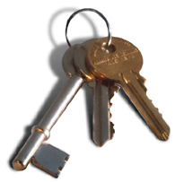

Ludd OpenPGP Keyserver
|
Extract a keyYou can extract keys by typing in some words that appear in the userid of the key you're looking for, or by typing in the keyid in hex format ("0x...")
|
Update a keyYou can update a key by simply pasting in the ASCII-armored version of the key and clicking on submit. |